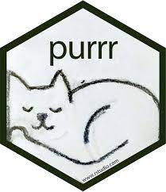

| name | genus | vore | order | conservation | sleep_total | sleep_rem | sleep_cycle | awake | brainwt | bodywt |
|---|---|---|---|---|---|---|---|---|---|---|
| Cheetah | Acinonyx | carni | Carnivora | lc | 12.1 | NA | NA | 11.9 | NA | 50.000 |
| Owl monkey | Aotus | omni | Primates | NA | 17.0 | 1.8 | NA | 7.0 | 0.01550 | 0.480 |
| Mountain beaver | Aplodontia | herbi | Rodentia | nt | 14.4 | 2.4 | NA | 9.6 | NA | 1.350 |
| Greater short-tailed shrew | Blarina | omni | Soricomorpha | lc | 14.9 | 2.3 | 0.1333333 | 9.1 | 0.00029 | 0.019 |
| Cow | Bos | herbi | Artiodactyla | domesticated | 4.0 | 0.7 | 0.6666667 | 20.0 | 0.42300 | 600.000 |
| Three-toed sloth | Bradypus | herbi | Pilosa | NA | 14.4 | 2.2 | 0.7666667 | 9.6 | NA | 3.850 |
Programming and reproducibility
Luis D. Verde Arregoitia
Today:
– Custom setups
– Shortcuts and tools for increased efficiency
– Iteration and vectorization to avoid repeating ourselves
– Lists
Customization
- IDE themes: tmThemeEditor by Allen Bargi
No one at the coffee shop will know you’re serious unless you have a dark background
Jared Lander
üìº R: Then and now
Fonts and ligatures - üîó Nerd Fonts
Pane Layouts
Shortcuts and tools for efficient coding
Coding tricks
Ctrl == ⌘ Command , Alt == ⌥ Option
- Multiline cursor (
ctrl+alt+up) or (ctrl+alt+down)
- dismiss with
escapekey
Shortcuts
- ‘pipe’ (
ctrl+shift+m) - asignment operator (
alt+-) - drag line (
alt+up) or (alt+down) - run (
ctrl+enter) - convert to comment (
ctrl+shift+c)
Iteration
Performing a process repeatedly
Any time we copy and paste code, and then edit, we are adding unnecessary steps that add room for errors
Nick Holt (2017)
Function Iterations in R
Challenge/brainstorm
Load the possum dataset from the openintro package
How could we identify the oldest male possums for each of the two populations?
no code needed for this
Grouped data
Most data analysis and manipulations tasks can be approached using the “split-apply-combine” paradigm:
- split the data into groups
- apply some analysis to each group
- combine the results
Data Carpentry (2018)
Aggregating and analyzing data with dplyr
Hadley Wickham (2011)
The split-apply-combine strategy for data analysis
group_by() from dplyr
- Define groups with one or more variables
- Stratify a data frame

Aggregating or manipulating grouped data
Once group_by() creates a “grouped” version of a table, dplyr functions will manipulate each “group” separately and then combine the results.
RStudio (2021)
Data transformation with dplyr cheatsheet
Within groups, we can:
summarize group values (mean, median)
extract the first or last n rows from each group
find the minimum or maximum values
remove duplicated rows
count records, etc.
mammal sleep data
Traits for 83 species of mammals in relation to their sleeping habits. From Savage & West (2007), bundled with ggplot2
n for each order
# A tibble: 19 × 2
# Groups: order [19]
order n
<chr> <int>
1 Afrosoricida 1
2 Artiodactyla 6
3 Carnivora 12
4 Cetacea 3
5 Chiroptera 2
6 Cingulata 2
7 Didelphimorphia 2
8 Diprotodontia 2
9 Erinaceomorpha 2
10 Hyracoidea 3
11 Lagomorpha 1
12 Monotremata 1
13 Perissodactyla 3
14 Pilosa 1
15 Primates 12
16 Proboscidea 2
17 Rodentia 22
18 Scandentia 1
19 Soricomorpha 5One row sampled randomly from each order
# A tibble: 19 × 11
# Groups: order [19]
name genus vore order conservation sleep_total sleep_rem sleep_cycle awake
<chr> <chr> <chr> <chr> <chr> <dbl> <dbl> <dbl> <dbl>
1 "Tenr… Tenr… omni Afro… <NA> 15.6 2.3 NA 8.4
2 "Cow" Bos herbi Arti… domesticated 4 0.7 0.667 20
3 "Chee… Acin… carni Carn… lc 12.1 NA NA 11.9
4 "Pilo… Glob… carni Ceta… cd 2.7 0.1 NA 21.4
5 "Litt… Myot… inse… Chir… <NA> 19.9 2 0.2 4.1
6 "Gian… Prio… inse… Cing… en 18.1 6.1 NA 5.9
7 "Nort… Dide… omni Dide… lc 18 4.9 0.333 6
8 "Poto… Poto… herbi Dipr… <NA> 11.1 1.5 NA 12.9
9 "Dese… Para… <NA> Erin… lc 10.3 2.7 NA 13.7
10 "Rock… Proc… <NA> Hyra… lc 5.4 0.5 NA 18.6
11 "Rabb… Oryc… herbi Lago… domesticated 8.4 0.9 0.417 15.6
12 "Shor… Tach… inse… Mono… <NA> 8.6 NA NA 15.4
13 "Hors… Equus herbi Peri… domesticated 2.9 0.6 1 21.1
14 "Thre… Brad… herbi Pilo… <NA> 14.4 2.2 0.767 9.6
15 "Babo… Papio omni Prim… <NA> 9.4 1 0.667 14.6
16 "Afri… Loxo… herbi Prob… vu 3.3 NA NA 20.7
17 "Vole… Micr… herbi Rode… <NA> 12.8 NA NA 11.2
18 "Tree… Tupa… omni Scan… <NA> 8.9 2.6 0.233 15.1
19 "Less… Cryp… omni Sori… lc 9.1 1.4 0.15 14.9
# ℹ 2 more variables: brainwt <dbl>, bodywt <dbl>summarize values
# A tibble: 19 × 3
order median_slp mean_brainwt
<chr> <dbl> <dbl>
1 Afrosoricida 15.6 0.0026
2 Artiodactyla 3.9 NA
3 Carnivora 10.2 NA
4 Cetacea 5.2 NA
5 Chiroptera 19.8 0.000275
6 Cingulata 17.8 0.0459
7 Didelphimorphia 18.7 NA
8 Diprotodontia 12.4 NA
9 Erinaceomorpha 10.2 0.00295
10 Hyracoidea 5.4 0.0152
11 Lagomorpha 8.4 0.0121
12 Monotremata 8.6 0.025
13 Perissodactyla 3.1 0.414
14 Pilosa 14.4 NA
15 Primates 9.9 NA
16 Proboscidea 3.6 5.16
17 Rodentia 12.9 NA
18 Scandentia 8.9 0.0025
19 Soricomorpha 10.3 0.000592Loops (for loops)
- Still useful
- most of the time we do not have to write them ourselves
Jenny Bryan
purrr tutorial
Data Rectangling
purrr workshop
Loops
Practice
Write a for loop to print every letter in the alphabet in lowercase and in reverse alphabetical order (e.g. z,y,x,w…)
Hints:
- R has built-in “letters” vectors?
- What do we want to do for every element in our sequence?
- Which function “prints” text to the console?
Loops and groups
Everything happens within the data frame
Vectorization is our friend
Operations occur in parallel on all elements, rather than on individual components in sequence
What will be the result here?
Logical operators are vectorized (many other fns too!)
We don’t need to compare each element

American Greetings
Functions
Functions make things happen in R
- Functions have arguments and always return something
- Operators such as
+,*, and even<-are functions
Why write our own functions
Avoids repetition
Brevity
Less room for errors
Take advantage of tools that help us apply functions to many things at once
Functions

Function Definition
The ‘function()’ function
function( arglist ) expr
arguments (arglist): values passed to the function
expression (expr): an object that represents an action that can be performed by R.
Note
Expressions contain one or more statements
Defining a function
The body of the function –the statements that are executed when it runs– is grouped with curly braces ({})
Function with two statements
Jenny Bryan - Stat545
Write your own R functions
Lists
Lists
Objects which contain elements of different types, such as numbers, strings, vectors, data frames, or even other lists
Rebecca Barter (2019)
Learn to purrr
We can also create lists by splitting other objects
Group and split with dplyr into a list of data frames, one for each group
List indexing

Working with list elements
First element in our list ([[1]])
# A tibble: 19 × 11
name genus vore order conservation sleep_total sleep_rem sleep_cycle awake
<chr> <chr> <chr> <chr> <chr> <dbl> <dbl> <dbl> <dbl>
1 Cheet… Acin… carni Carn… lc 12.1 NA NA 11.9
2 North… Call… carni Carn… vu 8.7 1.4 0.383 15.3
3 Dog Canis carni Carn… domesticated 10.1 2.9 0.333 13.9
4 Long-… Dasy… carni Cing… lc 17.4 3.1 0.383 6.6
5 Domes… Felis carni Carn… domesticated 12.5 3.2 0.417 11.5
6 Pilot… Glob… carni Ceta… cd 2.7 0.1 NA 21.4
7 Gray … Hali… carni Carn… lc 6.2 1.5 NA 17.8
8 Thick… Lutr… carni Dide… lc 19.4 6.6 NA 4.6
9 Slow … Nyct… carni Prim… <NA> 11 NA NA 13
10 North… Onyc… carni Rode… lc 14.5 NA NA 9.5
11 Tiger Pant… carni Carn… en 15.8 NA NA 8.2
12 Jaguar Pant… carni Carn… nt 10.4 NA NA 13.6
13 Lion Pant… carni Carn… vu 13.5 NA NA 10.5
14 Caspi… Phoca carni Carn… vu 3.5 0.4 NA 20.5
15 Commo… Phoc… carni Ceta… vu 5.6 NA NA 18.4
16 Bottl… Turs… carni Ceta… <NA> 5.2 NA NA 18.8
17 Genet Gene… carni Carn… <NA> 6.3 1.3 NA 17.7
18 Arcti… Vulp… carni Carn… <NA> 12.5 NA NA 11.5
19 Red f… Vulp… carni Carn… <NA> 9.8 2.4 0.35 14.2
# ℹ 2 more variables: brainwt <dbl>, bodywt <dbl>Second element
Note the different outputs

Luis (2017)
Export Iteratively
Why lists?
Flexible, can store many kinds of objects
We can easily create lists by splitting existing objects
List elements can be named
For efficient iteration

üì¶ purrr - Functional programming tools
- map functions to data
- work efficiently with lists
- readable code
Thomas Mock (2018)
Functional Programming in R with purrr
map(.x, .f, …)
for every element of .x
apply .f
... arguments for .f
Mapping functions to data
Apply functions to many things at once
Reading many files at once
Modifying and exporting multiple objects
Apply functions to many things at once
library(palmerpenguins)
library(purrr)
penguins <- na.omit(penguins)
# numeric vectors
mass <- penguins$body_mass_g # dollar sign extracts a vector from a table
bill <- penguins$bill_length_mm
flipper <- penguins$flipper_length_mm
# together in a list
traits <- list(mass, bill , flipper)
# apply "mean" to each list element
map(traits,mean)[[1]]
[1] 4207.057
[[2]]
[1] 43.99279
[[3]]
[1] 200.967